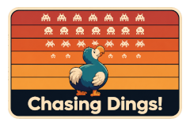
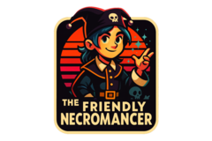
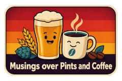

Tipa returns to Dune: Awakening solo, tweaking settings to skip grind and focus on story without redoing 500 hours of multiplayer progress. Cliffski finally gets a Ridiculous Space Battles demo onto Steam after last-minute patch chaos, with Early Access now just a month away.
Cliffski finally gets a Ridiculous Space Battles demo onto Steam after last-minute patch chaos, with Early Access now just a month away.
 Sey praises Desktop Explorer’s fake-OS puzzles and emotional storytelling, while noting its heavy themes make this psychological horror an uneasy recommendation.
Sey praises Desktop Explorer’s fake-OS puzzles and emotional storytelling, while noting its heavy themes make this psychological horror an uneasy recommendation.
 Emily finds Wanderstop mostly cozy and relaxing, with tea-making and gardening shining even when Alta’s burnout story brings a few mild annoyances.
Emily finds Wanderstop mostly cozy and relaxing, with tea-making and gardening shining even when Alta’s burnout story brings a few mild annoyances.
 Wilhelm sizes up EverQuest’s 33rd expansion, Favors of Fortune, with lore confusion, bard jokes, and the usual rundown of zones, raids, and abilities.
Wilhelm sizes up EverQuest’s 33rd expansion, Favors of Fortune, with lore confusion, bard jokes, and the usual rundown of zones, raids, and abilities.

The Friendly Necromancer swaps Shadow Knight for Enchanter in EverQuest Legends and finds the mez-heavy Beastlord trio surprisingly effective, if a little less flashy.
Joar finds the extra effort in cooking genuinely rewarding, using repeat runs at Mediterranean chicken to build skill, timing, and confidence. Juhis built a bookmarklet that color-codes image alt text issues, making a quick accessibility check for missing, empty, or filled alt attributes.
Juhis built a bookmarklet that color-codes image alt text issues, making a quick accessibility check for missing, empty, or filled alt attributes.
 Mike cleans up a CamelForth-80 port for the Sega SG-1000, fixing TMS9918A startup timing so it should behave better on real hardware.
Mike cleans up a CamelForth-80 port for the Sega SG-1000, fixing TMS9918A startup timing so it should behave better on real hardware.